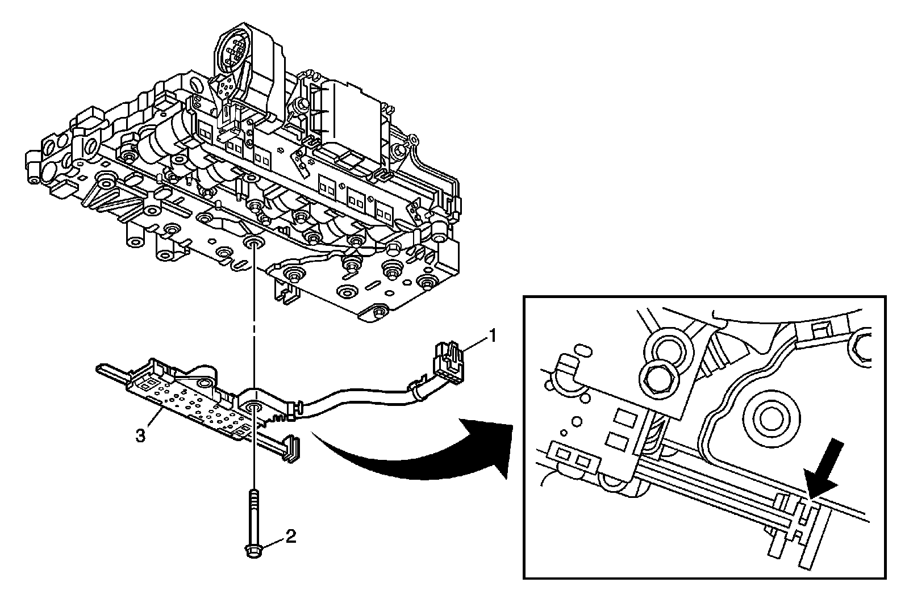
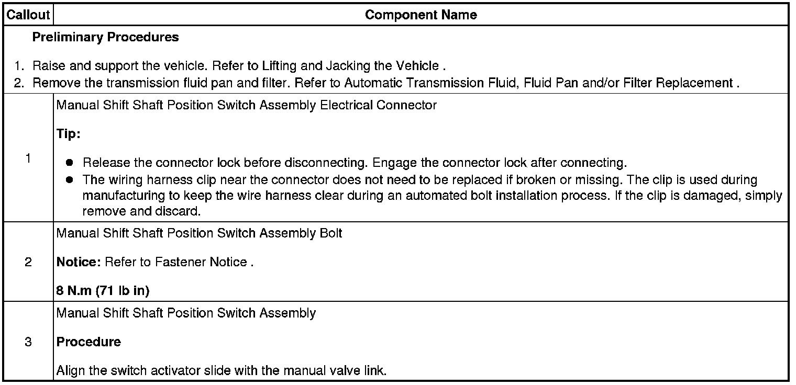

Operation CHARM
: Car repair manuals for everyone.
Home
>>
Cadillac
>>
2008
>>
SRX AWD V8-4.6L
>>
Repair and Diagnosis
>>
Transmission and Drivetrain
>>
Transmission Control Systems
>>
Sensors and Switches - Transmission and Drivetrain
>>
Sensors and Switches - A/T
>>
Transmission Position Sensor/Switch
>>
Service and Repair
>>
6L50/6L80/6L90 - Automatic Transmission
6L50/6L80/6L90 - Automatic Transmission
Manual Shift Shaft Position Switch Replacement

